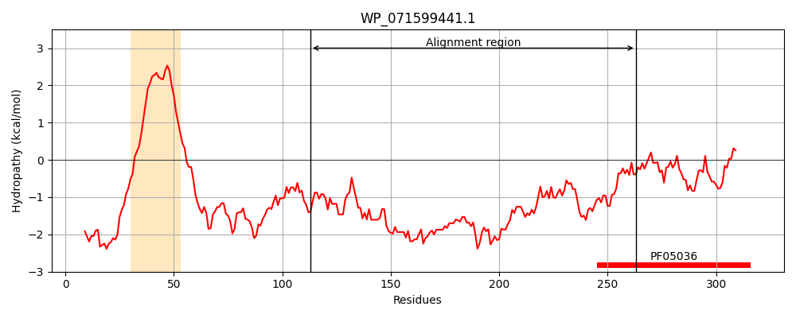
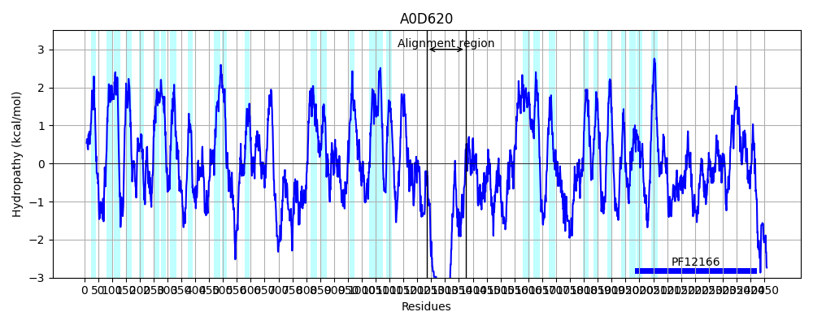
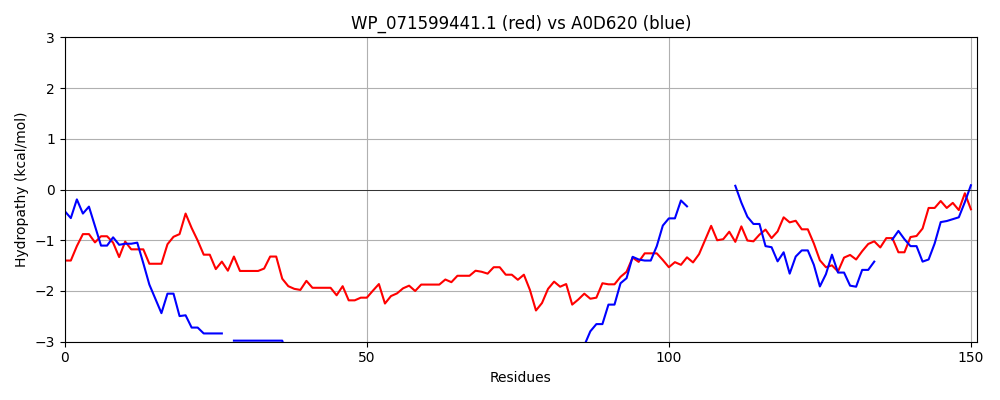

Hit Accession: A0D620
Hit TCID: 1.A.75.1.10
Hit Description: gnl|BL_ORD_ID|49 gnl|TC-DB|A0D620|1.A.75.1.10 Uncharacterized protein OS=Paramecium tetraurelia GN=GSPATT00013917001 PE=4 SV=1
Mach Len: 151
e:0.000000
Query TMS Count : 1
Hit TMS Count: 28
TMS-Overlap Score: 0.000000
Predicted Substrates:None
BLAST Alignment:
Score: 157 , Bit scores: 65 bits, E-value: 1.4e-11, Alignment length: 151, Percentage identity: 31
Query: 113 KPEQLTDEQRQLLAQMQADMRQQPTQLTEVPWNEQTPAQRQQTLQRQRLAQQQQQAQQQQWAQTQPQAVQQQPRVQQPKPVQQQQPKQTASNQQPYQDLLQTPAHTNTTQPRTQAAAPVTRVEEAPKAAEKKDDRSWMIQCGSFKGAEQAE 263
K + + ++ QL Q Q++ +QQ QL E +Q Q+QQ Q+Q+ QQQQQ QQQQ Q Q Q QQQ + QQ + QQQQ +Q + + L+ P R + + +E K+AE +++ +++ F+G +++
Sbjct: 1234 KDKVIMADEIQLEYQQQSNQQQQQQQL-EKHSEQQEQQQQQQQQQQQQQQQQQQQQQQQQQQQQQQQQQQQQQQQQQQQQQQQQQQQQQQQQKYQFASELEIPI-------RKEMVSQFQVEQEERKSAEMPEEK--LLKDTKFQGLTKSQ 1374 | Protein Hydropathy Plots: |
|---|
|  |  |
Pairwise Alignment-Hydropathy Plot:
|
|---|
|  |